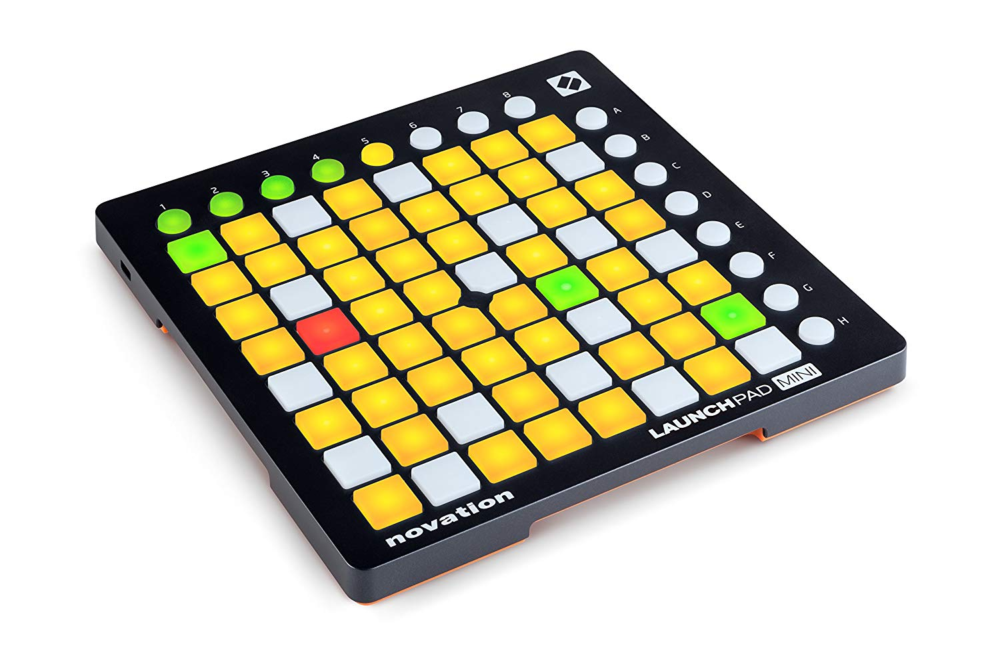

Creative Coding
foo and bar
Manuel Ernst
- from Erlangen, Bavaria Franconia
- Software Engineer @ Methodpark
- @seriousManual on Github & Twitter
Launchpad Mini

- 8x8 buttons
- 8 function buttons in x-direction
- 8 function buttons in y-direction
- 3 colors for each button, in 3 shades
Launchpad Mini - Initialisation
const launchpad = require('lunchpad')
const Color = launchpad.Color
launchpad.initialize().then(launchpad => {
// set color by coordinate
launchpad.setSquare(0, 0, Color.AMBER)
}, error => console.log(error))
Launchpad Mini - Setting
// set color by coordinate on buttons
launchpad.setSquare(0, 0, Color.AMBER)
// set color on the x function keys
launchpad.setFunctionX(0, Color.AMBER)
// set color on the y function keys
launchpad.setFunctionY(0, Color.AMBER)
// clear everything
launchpad.clearAll()
Launchpad Mini - Event-Handling
// register event handler on button
launchpad.on('input', (x, y) => {
console.log(x, y)
})
// register event handler on function button X
launchpad.on('inputX', x => {
console.log(x)
})
// register event handler on function button Y
launchpad.on('inputY', y => {
console.log(y)
})
Launchpad Mini - Colors
const { Color } = require('lunchpad')
launchpad.setSquare(0, 0, Color.BLACK) // unset
launchpad.setSquare(0, 0, Color.AMBER) // amber
launchpad.setSquare(0, 0, Color.RED) // red
launchpad.setSquare(0, 0, Color.GREEN) // green
Launchpad Mini - Setup
$ git clone git@github.com:methodpark/creative-coding.git
$ cd creative-coding
$ npm i
$ npm run drawing
$ npm run gol
$ npm run connect-four
$ npm run snake
Reference- and Trouble-Shooting-Guide at:
https://github.com/methodpark/creative-coding
Cheatsheet
const launchpad = require('lunchpad')
const Color = launchpad.Color
launchpad.initialize().then(launchpad => {
launchpad.setSquare(0, 0, Color.AMBER)
launchpad.setFunctionX(0, Color.RED)
launchpad.setFunctionY(0, Color.GREEN)
launchpad.on('input', (x, y) => console.log(x, y))
launchpad.on('inputX', x => console.log(x))
launchpad.on('inputY', y => console.log(y))
}, error => console.log(error))